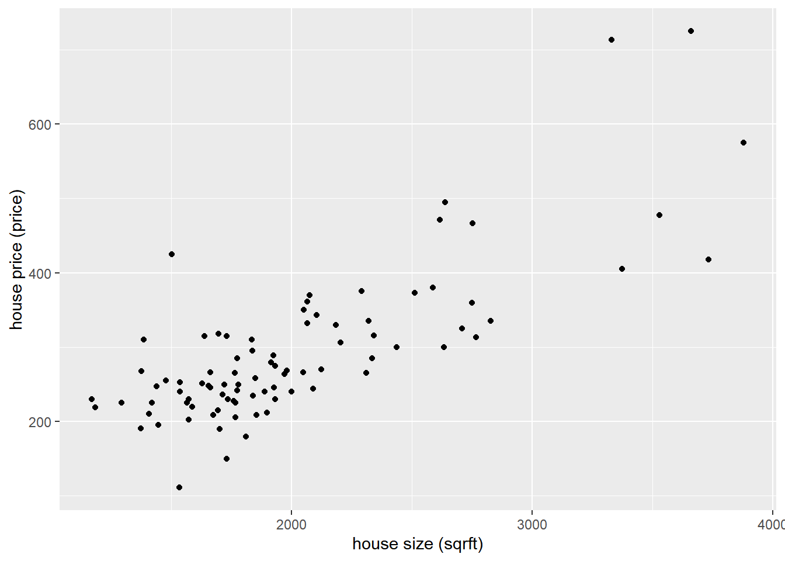

Min. 1st Qu. Median Mean 3rd Qu. Max.
111.0 230.0 264.0 288.3 316.0 725.0 Homework 2 Answers
If you find any typos or errors, please feel free to contact me via email at r13323002@ntu.edu.tw. I would appreciate it and will correct the solution to prevent any misunderstandings.
For some R commands marked with ‘OPTIONAL,’ you don’t need to learn them. You will be completely fine on the computer quiz even if you choose to ignore them.
If you’re having trouble understanding the code, don’t hesitate to ask me for help. I’ll do my best to assist you during office hours or after the TA session.
1 Textbook Exercises
1.1 Exercise 4.1
\[ \widehat{\text{TestScore}} = 640.3 - 4.93 \times 25 = 517.05 \]
\[ \begin{aligned} \Delta \widehat{\text{TestScore}} &= (640.3 - 4.93 \times 24) - (640.3 - 4.93 \times 21) \\ &= -4.93 \times (24 - 21) \\ &= -14.79 \end{aligned} \]
\[ \begin{aligned} \overline{\text{TestScore}} &= \hat{\beta}_0 + \hat{\beta}_1 \times \overline{\text{CS}} \\ &= 640.3 - 4.93 \times 22.8 \\ &= 527.896 \end{aligned} \]
\[ \begin{aligned} s_Y = \sqrt{\frac{1}{n - 1} TSS} &= \sqrt{\frac{1}{n - 1} \cdot \frac{SSR}{1 - R^2}} \\ &= \sqrt{\frac{1}{n - 1} \cdot \frac{(n-2)SER^2}{1 - R^2}} \\ &= \sqrt{\frac{1}{50 - 1} \cdot \frac{(50 - 2) \cdot (8.7)^2}{1 - 0.11}} \approx 9.1274 \end{aligned} \]
1.2 Exercise 4.3
- Intercept: A worker with €0 average monthly income has a predicted average monthly expenditure of €710.7.
- Slope: AME is expected to increase by €8.8 for each additional euro of income.
SER is in the same units as the dependent variable. That is, SER is measured in euros (or dollars) per month.
\(R^2\) is unit free.
If \(AMI = 100\), then
\[ AME = 710.7 + 8.8 \times 100 = 1590.7 \] If \(AMI = 200\), then
\[ AME = 710.7 + 8.8 \times 200 = 2470.7 \]
No. The highest income in the sample is €1.5 million, and €2 million is far outside the range of the sample data.
No. The distribution of earnings is positively skewed.
1.3 Exercise 4.7
\[ \begin{aligned} E\left(\hat{\beta}_0\right) &= E\left(\overline{Y} - \hat{\beta}_1 \overline{X}_1\right) \\ &= E \left[ \left( \beta_0 + \beta_1 \overline{X}_1 + \frac{1}{n} \sum_{i=1}^{n} u_i \right) - \hat{\beta}_1 \overline{X}_1 \right] \\ &= E \left[ \beta_0 + (\beta_1 - \hat{\beta}_1) \overline{X}_1 + \frac{1}{n} \sum_{i=1}^{n} u_i \right] \\ &= E (\beta_0) + E \left\{ E \left[ (\beta_1 - \hat{\beta}_1) \overline{X}_1 \mid X_1 \right] \right\} + E \left(\frac{1}{n} \sum_{i=1}^{n} u_i\right) \\ &= \beta_0 + E \left[ \overline{X}_1 \underbrace{E \left(\beta_1 - \hat{\beta}_1 \mid X_1\right)}_{=0} \right] + \frac{1}{n} \sum_{i=1}^{n} \underbrace{E(u_i)}_{=0} \\ &= \beta_0 \end{aligned} \]
1.4 Exercise 4.12
- Note that
\[ \begin{aligned} ESS &= \sum_{i=1}^{n} (Y_i - \bar{Y})^2 \\ &= \sum_{i=1}^{n} (\hat{\beta}_0 + \hat{\beta}_1 X_i - \bar{Y})^2 \\ &= \sum_{i=1}^{n} [\hat{\beta}_1 (X_i - \bar{X})]^2 \\ &= \hat{\beta}_1^2 \sum_{i=1}^{n} (X_i - \bar{X})^2 \end{aligned} \] Then
\[ \begin{aligned} R^2 &= \frac{ESS}{TSS} \\ &= \frac{\hat{\beta}_1^2 \sum_{i=1}^{n} (X_i - \overline{X})^2}{\sum_{i=1}^{n} (Y_i - \overline{Y})^2} \\ &= \left[ \frac{\sum_{i=1}^{n} (X_i - \overline{X}) (Y_i - \overline{Y})}{\sum_{i=1}^{n} (X_i - \overline{X})^2} \right]^2 \cdot \frac{\sum_{i=1}^{n} (X_i - \overline{X})^2}{\sum_{i=1}^{n} (Y_i - \overline{Y})^2} \\ &= \frac{\left[\sum_{i=1}^{n} (X_i - \overline{X}) (Y_i - \overline{Y})\right]^2} {\sum_{i=1}^{n} (X_i - \overline{X})^2 \sum_{i=1}^{n} (Y_i - \overline{Y})^2} \\ &= \left[ \frac{\sum_{i=1}^{n} (X_i - \overline{X}) (Y_i - \overline{Y})} {\sqrt{\sum_{i=1}^{n} (X_i - \overline{X})^2} \sqrt{\sum_{i=1}^{n} (Y_i - \overline{Y})^2}} \right]^2 \\ &= \left[ \frac{\frac{1}{n-1} \sum_{i=1}^{n} (X_i - \overline{X}) (Y_i - \overline{Y})} {\sqrt{\frac{1}{n-1} \sum_{i=1}^{n} (X_i - \overline{X})^2} \sqrt{\frac{1}{n-1} \sum_{i=1}^{n} (Y_i - \overline{Y})^2}} \right]^2 \\ &= \left[ \frac{s_{XY}}{s_X \cdot s_Y} \right]^2 \\ &= r_{XY}^2 \end{aligned} \]
Since \(r_{XY} = r_{YX}\), the statement is true.
\[ \begin{aligned} r_{XY} \cdot \frac{s_Y}{s_X} &= \frac{s_{XY}}{s_X \cdot s_Y} \cdot \frac{s_Y}{s_X} \\ &= \frac{\frac{1}{n-1} \sum_{i=1}^{n} (X_i - \overline{X}) (Y_i - \overline{Y})} {\frac{1}{n-1} \sum_{i=1}^{n} (X_i - \overline{X})^2} \\ &= \frac{\sum_{i=1}^{n} (X_i - \overline{X}) (Y_i - \overline{Y})} {\sum_{i=1}^{n} (X_i - \overline{X})^2} = \hat{\beta}_1. \end{aligned} \]
1.5 Exercise 5.2
The estimated gender wage gap is $1.78 per hour.
Prepare:
\[ \left\{\begin{aligned} &H_0: \beta_{\text{Male}} = 0 \\ &H_1: \beta_{\text{Male}} \neq 0 \end{aligned}\right. \] Let the significance level be \(\alpha = 0.05\).
Calculate:
\[ t^* = \frac{1.78 - 0}{0.29} \approx 6.14 \] \[ p\text{-value} = 2 \Phi(-t^*) \approx 2 \Phi(-6.14) \approx 0 \] Conclude:
Since $p$-value < 0.05, we reject $H_0$. There is significant evidence that the gender wage gap is different from 0.- Confidence Interval:
\[ \hat{\beta}_{\text{Male}} \pm Z_{0.025} SE(\hat{\beta}_{\text{Male}}) = 1.78 \pm 1.96 \times 0.29 = [1.21, 2.35] \]
- The sample average wage of women is
\[ \hat{\beta}_0 = 10.73 \quad \text{(in dollars per hour)} \] The sample average wage of men is
\[ \hat{\beta}_0 + \hat{\beta}_{\text{Male}} = 10.73 + 1.78 = 12.51 \quad \text{(in dollars per hour)} \]
- Regression equation:
\[ \begin{aligned} \text{Wage} &= (\hat{\beta}_0 + \hat{\beta}_{\text{Male}}) + (-\hat{\beta}_{\text{Male}}) \times \text{Female} \\ &= 12.51 - 1.78 \times \text{Female}, \quad R^2 = 0.09, \quad SER = 3.8 \end{aligned} \]
1.6 Exercise 5.5
The estimated gain from being in a small class is 13.9 points. This is approximately 20% of the standard deviation in test scores, representing a moderate increase.
Prepare:
\[ \left\{\begin{aligned} &H_0: \beta_{\text{SmallClass}} = 0 \\ &H_1: \beta_{\text{SmallClass}} \neq 0 \end{aligned}\right. \] Let the significance level be \(\alpha = 0.05\).
Calculate:
\[ t^* = \frac{13.9 - 0}{2.5} \approx 5.56 \] Conclude:
Since $t^* > Z_{0.025} = 1.96$, we reject $H_0$. There is significant evidence that the estimated effect of class size on test scores is different from 0.- Confidence Interval:
\[ \hat{\beta}_{\text{SmallClass}} \pm Z_{0.005} \cdot SE(\hat{\beta}_{\text{SmallClass}}) = 13.9 \pm 2.576 \times 2.5 = [7.46, 20.34] \]
- Yes. Students were randomly assigned to small or regular classes, so that \(\text{SmallClass}\) is independent of characteristics of the student, including those affecting \(\text{TestScore}\), that is \(u\).
2 Computer Exercises
# remove pre-load data, and import package
rm(list = ls())
library(tidyverse)
# set directory and import data
house <- read.csv("data/hprice.csv")2.1 House Price: Summary Statistics
summary(house$price)hprice_ttest <- t.test(
house$price,
conf.level = 0.95
)
hprice_ttest$conf.int[1] 269.0060 307.6099
attr(,"conf.level")
[1] 0.95This confidence interval suggests that we are 95% confident that the true mean house price in the population falls between $269,006 and $307,609 (in $1000 units). This means that, based on the sample data, the average price of houses in Boston in 1990 is likely within this range.
2.2 House Price: Average Price
For the house built in colonial style:
house %>%
filter(colonial == 1) %>%
summarize(avg_hprice = mean(price)) avg_hprice
1 295.3394and for the house not built in colonial style:
house %>%
filter(colonial == 0) %>%
summarize(avg_hprice = mean(price)) avg_hprice
1 271.66672.3 House Price: Scatter Plot
ggplot(house, aes(x = sqrft, y = price)) +
geom_point() +
labs(
x = "house size (sqrft)",
y = "house price (price)"
)
cor(house$price, house$sqrft)[1] 0.7859626Because \(\text{Corr}(price, \textit{sqrft}) > 0.7\), the strength of the relationship is strong. Also by inspecting the scatter plot, we can conclude that fitting a linear model would be reasonable.
2.4 House Price: Regression (1)
Given the following specification:
\[ \textit{price}_i = \beta_0 + \beta_1 \textit{sqrft}_i + u_i \] we propose the hypothesis:
\[ \left\{\begin{aligned} &H_0: \beta_1 = 0 \\ &H_1: \beta_1 \neq 0 \end{aligned}\right. \]
reg1 <- lm(
formula = price ~ sqrft,
data = house
)
summary(reg1)
Call:
lm(formula = price ~ sqrft, data = house)
Residuals:
Min 1Q Median 3Q Max
-115.236 -34.984 -5.694 26.693 237.069
Coefficients:
Estimate Std. Error t value Pr(>|t|)
(Intercept) 12.40037 22.63572 0.548 0.585
sqrft 0.13931 0.01101 12.648 <2e-16 ***
---
Signif. codes: 0 '***' 0.001 '**' 0.01 '*' 0.05 '.' 0.1 ' ' 1
Residual standard error: 60.76 on 99 degrees of freedom
Multiple R-squared: 0.6177, Adjusted R-squared: 0.6139
F-statistic: 160 on 1 and 99 DF, p-value: < 2.2e-16From the regression result, we have the \(p\)-value of the coefficient of house size (\(\textit{sqrft}\)) is very small (\(<5\%\)), hence we reject the null hypothesis. There is significant evidence that the coefficient on house size is different from zero.
2.5 House Price: Regression (2)
reg2 <- lm(
formula = price ~ colonial,
data = house
)
reg2$coefficients(Intercept) colonial
271.66667 23.67277 From the regression result, we have the estimated coefficients of \(\textit{colonial}\) is same as colonial gap, which is the gap between two means in question (b).